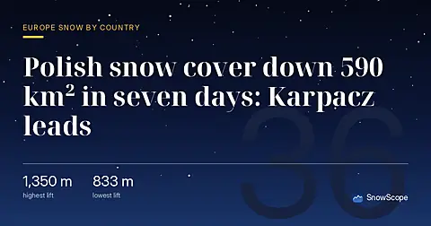

Poland snow report: snow depth, new snow and the week ahead
In Poland about 370 km² of high ground is white today, 3 % of the country's mapped mountains and hills. That is 210 km² less than yesterday. The deepest resort is Karpacz with 49 cm on its upper slopes. Up to 14 cm of new snow could fall on the snowiest slopes in the week ahead.
See the live snow forecast for Karpacz in the SnowScope appSnow depth, powder alerts and the 3D map, free.Today at a glance
| White area | 370 km² |
|---|---|
| Share of the high ground | 3 % |
| Most new snow in 24 h | 5 cm |
| Most new snow in 3 days | 9 cm |
| Next 3 days (snowiest slopes) | 7 cm |
| Next 7 days | 14 cm |
| Mostly white from | 1,200 m |
| Resorts with snow on top | 18 of 114 |
The last seven days
On 16 November about 1,170 km² was white; today it is 370 km².
The snow cover shrank by 800 km² over these days.
The biggest three-day snowfall of the period reached 9 cm (to 19 November).
Snowiest resorts today
Karpacz leads with 49 cm on its upper slopes.
Then come Kasprowy Wierch (32 cm), Szrenica (26 cm), Tobołów (9 cm) and Stok Karpatka (8 cm).
| Resort | Upper slopes | New, 3 days | Next 3 days | Top |
|---|---|---|---|---|
| Karpacz | 49 cm | 10 cm | 9 cm | 1,350 m |
| Kasprowy Wierch | 32 cm | 20 cm | 8 cm | 1,958 m |
| Szrenica | 26 cm | 7 cm | 9 cm | 1,306 m |
| Tobołów | 9 cm | 1 cm | 4 cm | 965 m |
| Stok Karpatka | 8 cm | 3 cm | 7 cm | – |
Where the snow is coming next
Up to 7 cm is expected on the snowiest slopes in the next three days, and up to 14 cm over the week.
The snowiest day looks like Friday 20 November, with up to 6 cm.
The last three days brought the most fresh snow to the Tatras, the Beskids and the Karkonosze.
The second week could add up to 6 cm where it snows most.
Snow by height
Height by height: 500-1,000 m: 0 cm on average, 1 % white; 1,000-1,500 m: 2 cm on average, 32 % white; 1,500-2,000 m: 22 cm on average, 100 % white.
Most of the ground is white from about 1,200 m up.
Planning a trip
Above 1,500 m the ground is almost fully white (100 % covered), so runs up there have a continuous base.
Between 1,000 m and 1,500 m the cover is patchy, about 32 % white: expect grass and stones between the snow.
The resorts with the highest lifts are the safest bet: Kasprowy Wierch (1,958 m), Karpacz (1,350 m) and Szrenica (1,306 m).
Day by day
- Thursday 19 November · 370 km² white, up to 9 cm of new snow in three days, deepest Karpacz (49 cm)
- Wednesday 18 November · 590 km² white, up to 6 cm of new snow in three days, deepest Karpacz (46 cm)
- Tuesday 17 November · 1,170 km² white, up to 5 cm of new snow in three days, deepest Karpacz (44 cm) · Polish snow cover down 590 km² in seven days: Karpacz leads
- Monday 16 November · 1,170 km² white, up to 0 cm of new snow in three days, deepest Orlické Záhoří (45 cm) · Poland loses 910 km² of snow cover in one mild day
Questions and answers
Is there snow in Poland right now?
Only a little: about 370 km² of high ground is white, mostly on the highest summits. The deepest resort is Karpacz with 49 cm on its upper slopes.
Where is the most snow in Poland today?
Karpacz leads with 49 cm on its upper slopes. Then come Kasprowy Wierch (32 cm), Szrenica (26 cm) and Tobołów (9 cm).
Will it snow in Poland this week?
Up to 7 cm is expected on the snowiest slopes in the next three days, and up to 14 cm over the week. The snowiest day looks like Friday 20 November, with up to 6 cm.
From what height is there snow in Poland?
Most of the ground is white from about 1,200 m up.
How much new snow fell in Poland in the last three days?
Up to 9 cm on the snowiest slopes, 5 cm of it in the last 24 hours. At least 5 cm fell over some 180 km². The last three days brought the most fresh snow to the Tatras, the Beskids and the Karkonosze.
How many ski resorts in Poland have snow?
18 of the 114 resorts we follow have snow on their upper slopes today. Snow on top does not mean the lifts are open: check the resort before you go.
Stories about Poland

Poland's snow-covered area shrank from 1,300 to 710 km² in a week. Karpacz holds the deepest snow at 36 cm as of 17 November.

Rapid thaw removed nearly 44% of Poland's snow cover on 16 November. Only 1,170 km² remains white, with recovery expected from 17 November.